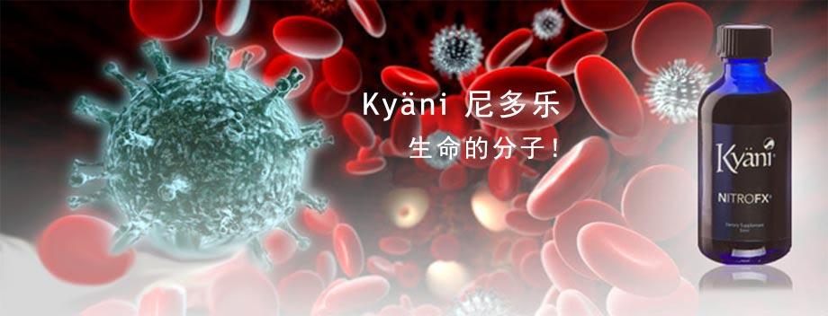
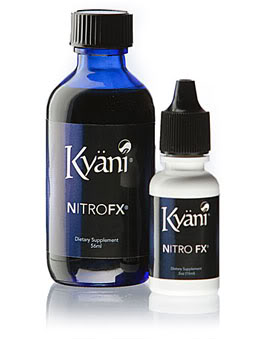
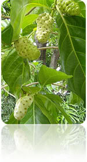
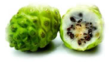
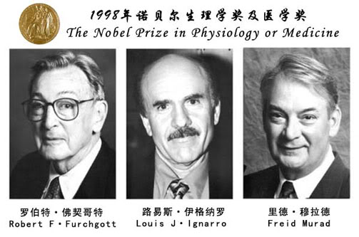

尼多乐——全面滋养我们的每一个细胞
您准备把身体提升到更好的状态吗？尼多乐(Kyani Nitro FX)中的诺丽成分能够帮助您的身体产生一氧化氮，修复、滋养和保护每一个细胞！

尼多乐的原料取自南太平洋大溪地的野生诺丽，2000多年来玻利尼西亚人一直使用药用植物诺丽来改善他们的健康，维持苗条体态及美容护肤。但您如果问他们是什么让诺丽这么有效时，玻利尼西亚人只会说他们不知道。现代研究证实尼多乐的主要成分诺丽含有天然的维生素、微量元素、抗氧化剂和各种酶，此外，诺丽叶中饱和脂肪含量低而且含有丰富的膳食纤维，但这些研究还仅仅是开始。直到一氧化氮的作用被发现后我们才了解诺丽如此强效的真正原因，这一发现让我们开发出了全新的革命性主导产品尼多乐。
Kyani凯安尼突破性的研究揭开了诺丽神奇功效的秘密， 尼多乐将诺丽的效果提升到一个崭新的境界。2001年，一间独立实验室对诺丽进行研究，实验人员在试管进行内皮测试，发现稀释的诺丽果汁可产生一氧化氮作用。而Kyani的研究发现，诺丽叶还能比稀释的诺丽果汁产生多4倍的一氧化氮。于是，尼多乐采用诺丽植物中最精华的部分，将根、茎、叶和果实一起正确地配方组合，经过高度浓缩制成精华液，尼多乐产生的一氧化氮比稀释诺丽果汁更高达50倍！
一氧化氮被称为“生命的分子”，可以修复、滋养及保护人体的每一个细胞。经过学者和医师对一氧化氮进行了大量的研究，成千上万的论文将其推为一种强力的健康保护分子。
近代的医学和科学史中，一氧化氮于人体内发挥的功能是最重要的发现之一。在1998年三名药理学家因一氧化氮的研究而获得了诺贝尔生理学奖和医学奖。研究发现，一氧化氮一种可在体内自然产生的高度反应气体，它是最重要的信号分子，影响各种生理功能包括血液循环、免疫、以及氧气在红血球的释放等。在身体内，一氧化氮是由蛋白质和小肠里的小肽释放，然后吸收结合其他的氨基酸，进入血液循环，传递到人体细胞中的每个系统。离开了一氧化氮我们的免疫系统将崩溃，只需5-10秒人就会死亡。
使用尼多乐野生诺丽精华的原因
- 防治心脑血管疾病如：心肌梗死、心绞痛、中风等；净化血液，显著降低胆固醇、甘油三脂
- 增强心肌功能，扩张血管，促进血液循环。防治高血压、心肌梗塞，改善心律不整，防止动脉硬化
- 改善胰岛素分泌，降低血糖；改善糖尿病及其并发症
- 调节内分泌，提高性功能。改善夫妻生活质量，防治阳痿、早泄
- 提高免疫力，免疫清除自由基，抗发炎，消肿胀，防止病毒入侵，抑制癌细胞
- 改善脑部小脑供血，改善睡眠质量；增强记忆力，延缓大脑细胞衰老，防治老年痴呆症
- 推迟更年期的早到，减轻更年期症状，消除面部斑块
- 促进营养吸收，迅速补充体力
成千上万的研究结果已经证明了一氧化氮对人体健康的重要作用，它几乎对身体各大系统和细胞的健康有作用，大量的临床试验支持了这些结论。我强烈推荐尼多乐诺丽精华，它会给你和家人带来健康的生活。
——阿巴斯博士
来自南太平洋岛屿的神奇植物——诺丽
大溪地在地球上的位置
大溪地，是南太平洋中部法属玻里尼西亚社会群岛中向风群岛的最大岛屿。这里风景优美，气候宜人，空气清新，有着湛蓝的海水、细软的沙滩和青翠欲滴的绿色，没有工业，没有污染，四季温暖如春、物产丰富。衣食无忧的人们常常无所事事地望着大海远处凝思，静待日落天亮。阳光跟着太平洋上吹来的风一同到来，海水的颜色也由幽深到清亮。他们管自己叫“上帝的人”，人们管那里叫“最接近天堂的地方”。
而在这被世界誉为最后的“人间天堂”的土地上，生长着一种更为神奇的果子——诺丽(Noni)。

热带水果皇后——诺丽果是檄（音“习”）树的果实，诺丽果实是中空的，故可以浮在水面上，利用海潮传播种子。在太平洋周边岛屿的海边可看到自然生长的檄树群落。檄树的适应力很强，对土壤的要求不高，甚至可以忍受含盐度高的土壤，且耐旱力强，因此可以生长在许多不同的环境里。阴蔽的森林里、土壤肥沃的火山周边地区，干旱的次生土地区、贫瘠的海岸熔岩地、光秃的石灰岩地甚至沙质海岸都可以生长。而大溪地的土壤肥沃，非常适合檄树的生长。植株为常绿小乔木，可以生长至九米以上。叶片大，单叶，暗绿色，叶面光亮；诺丽果由开花至成熟期需时90天，同一株诺丽果树结有不同成熟程度的果实，而且一年365天，天天可以采到成熟的果实；花小，白色；果实为复合果，卵形，约4-7厘米大，果实刚开始时为绿色，后转变为黄色，成熟时几乎变为白色，果实内有很多种子。
诺丽用途甚广：叶可外敷消炎；根部可降血压；树皮有强烈收敛功效；种子有催泻作用；花朵可治眼疾；果实具有很高的营养价值。早在公元前，大溪地群岛上的土著民族就发现了诺丽果实具有天然的健康功效和医药功效，经常将诺丽果实发醇以后，再经过滤，作为日常饮品和治疗疾病。虽然岛上没有现代的医疗设备，但当地人没有三高、没有癌症，寿命很长，平均达到80.2岁，而同纬度的人平均年龄只有40岁！
诺丽的营养成分丰富得让人难以置信，富含抗氧化成分、植物营养素和生物黄酮类化合物等。诺丽的根、茎、叶、果都含有丰富的氨基酸、维生素和矿物质。例如维生素C、维生素E、钙、镁、锌等200多种营养成分。

诺丽可以促进细胞再生，令体内受损的细胞及组织重新活跃起来，甚至能够恢复到原来的程度！诺丽除了可以帮助人体产生一氧化氮，还含有丰富的赛洛宁原（Proxeronine）及赛洛宁转化酶（Proxeronase）。这二种成分是赛洛宁（Xeronine）的先驱物质。塞洛宁可以中和大多数对人体有害的物质，有神奇的促进再生能力。常食诺丽，能为身体提供足够的赛洛宁，保护身体细胞组织，防止病痛；若有病痛发生，它则会迅速修补受伤的细胞，并将代谢残渣及毒素排出体外，使之恢复正常。科学实验证明，赛洛宁可以令肿瘤及癌细胞表现得像正常细胞一样。由于人体不会对付恶性细胞，因此如果肿瘤及癌细胞表现得像正常细胞一样，身体便会如同代谢正常细胞一样用新的健康细胞去取代肿瘤及癌细胞，使肿瘤及癌细胞自然死去！
一氧化氮——生命的分子
在历史上有很多巧合，诺贝尔因发现了硝酸甘油而成名，后来当他患上了冠心病，医生建议用硝酸甘油来治疗，但他固执地认为用自己做炸药的成分来治疗自己的病很荒唐，因而延误了病情。一百多年后的1998年，路易斯J•伊格纳罗等三位美国科学家因发现了一氧化氮的作用而阐明了硝酸甘油治疗冠心病的作用机理而获得了所有科学家梦寐以求的诺贝尔奖。

尼多乐即以最安全最天然的方式促使我们的身体产生足量的一氧化氮，改善身体的健康状况而且无副作用。
一氧化氮与心脑血管健康
一氧化氮可降血压，改善血液循环，增加血管弹性，防止血栓的形成。血管内皮细胞是控制血管松弛和扩张的平滑肌，而一氧化氮对于这些平滑肌细胞发挥功能起着重要的作用。一氧化氮通过扩张血管来增强氧气运输，保护心脏不受损伤，防止细胞死亡。一氧化氮确保规律的心脏电脉冲和正常的心率。对于大脑一氧化氮在大脑神经细胞间传递信息，这些细胞与学习、记忆、睡眠有关。一氧化氮可以刺激大脑，调节大量的功能，从行为举止到胃肠蠕动都有一氧化氮的参与。
一氧化氮与性功能
1998年获得诺贝尔奖的路易斯J•伊格纳罗博士促使了伟哥的研发，因此他被称为“伟哥之父”。伟哥就是通过一氧化氮效应起作用的。不同的是，尼多乐不是人工合成的，而是用纯天然的植物促使身体自身产生一氧化氮，没有任何副作用！很多的性功能问题是由于血液循环中的一氧化氮不足引起的。一氧化氮是引起阴茎勃起的化学信使，勃起组织内的神经细胞产生一氧化氮舒张血管而使阴茎勃起，从而延长性生活时间，提升性生活质量。一氧化氮不仅适用于男性，同样适用于女性，它也能够帮助女性增加生殖器充血，使女性更易获得快感。另外一氧化氮能够很好的改善肾动脉硬化，增加肾血流量，达到养肾、改善性生活质量的目的。
一氧化氮与免疫
一氧化氮能抑制血小板聚集与黏附，减少白细胞的聚集，防止血栓的形成；还能抑制淋巴细胞增殖，抑制肥大细胞的活性，抑制巨噬细胞的氧化产物；在慢性感染和炎症时，激活巨噬细胞和白细胞产生的一氧化氮，参与杀灭细菌、病毒、寄生虫、真菌、肿瘤细胞的作用，以及参与其他一系列的免疫过程。由于一氧化氮能够诱导细胞的死亡和凋亡过程，故一氧化氮能很好的抑制肿瘤的生长，达到了防癌抗癌的目的。
一氧化氮与脑功能
在中枢神经系统中，一氧化氮促进递质释放，参与突触可逆性过程，参与视觉、痛觉及嗅觉的气味区分等方面，调节血脑屏障的通透性，参与脑的高级功能活动，如学习、记忆功能，还可以改善睡眠质量。事实上，从老年痴呆症到糖尿病，痔疮等，一氧化氮的产量不足都会导致病情恶化。